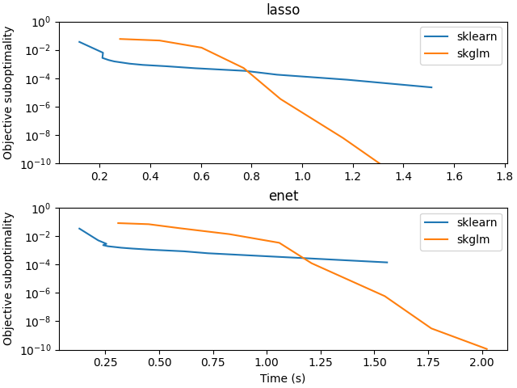

Note
Go to the end to download the full example code
Timing comparison with scikit-learn for Lasso#
Compare time to solve large scale Lasso problems with scikit-learn.
file_sizes: 0%| | 0.00/26.8M [00:00<?, ?B/s]
file_sizes: 0%| | 24.6k/26.8M [00:00<04:15, 105kB/s]
file_sizes: 0%| | 49.2k/26.8M [00:00<04:16, 104kB/s]
file_sizes: 0%| | 106k/26.8M [00:00<02:39, 167kB/s]
file_sizes: 1%|▏ | 221k/26.8M [00:00<01:31, 291kB/s]
file_sizes: 1%|▎ | 254k/26.8M [00:01<01:52, 236kB/s]
file_sizes: 3%|▊ | 762k/26.8M [00:01<00:31, 834kB/s]
file_sizes: 3%|▉ | 893k/26.8M [00:01<00:32, 786kB/s]
file_sizes: 4%|█ | 1.02M/26.8M [00:01<00:36, 711kB/s]
file_sizes: 5%|█▎ | 1.25M/26.8M [00:02<00:42, 601kB/s]
file_sizes: 5%|█▍ | 1.45M/26.8M [00:02<00:38, 659kB/s]
file_sizes: 6%|█▋ | 1.71M/26.8M [00:02<00:33, 742kB/s]
file_sizes: 7%|█▊ | 1.81M/26.8M [00:03<00:56, 440kB/s]
file_sizes: 7%|█▉ | 1.93M/26.8M [00:03<00:55, 449kB/s]
file_sizes: 8%|██ | 2.02M/26.8M [00:04<01:08, 360kB/s]
file_sizes: 8%|██▏ | 2.12M/26.8M [00:04<01:06, 370kB/s]
file_sizes: 8%|██▏ | 2.17M/26.8M [00:05<01:33, 264kB/s]
file_sizes: 9%|██▎ | 2.29M/26.8M [00:05<01:19, 309kB/s]
file_sizes: 9%|██▎ | 2.33M/26.8M [00:05<01:25, 286kB/s]
file_sizes: 9%|██▍ | 2.37M/26.8M [00:05<01:37, 250kB/s]
file_sizes: 9%|██▍ | 2.41M/26.8M [00:05<01:46, 230kB/s]
file_sizes: 9%|██▌ | 2.51M/26.8M [00:06<01:50, 219kB/s]
file_sizes: 9%|██▌ | 2.54M/26.8M [00:06<02:00, 201kB/s]
file_sizes: 10%|██▌ | 2.56M/26.8M [00:06<02:16, 177kB/s]
file_sizes: 10%|██▌ | 2.59M/26.8M [00:07<02:33, 158kB/s]
file_sizes: 10%|██▋ | 2.64M/26.8M [00:07<02:59, 134kB/s]
file_sizes: 10%|██▋ | 2.69M/26.8M [00:07<02:38, 152kB/s]
file_sizes: 10%|██▋ | 2.70M/26.8M [00:08<03:50, 105kB/s]
file_sizes: 10%|██▊ | 2.76M/26.8M [00:08<02:57, 135kB/s]
file_sizes: 10%|██▊ | 2.78M/26.8M [00:08<03:21, 119kB/s]
file_sizes: 10%|██▊ | 2.81M/26.8M [00:09<03:23, 118kB/s]
file_sizes: 11%|██▋ | 2.83M/26.8M [00:09<04:34, 87.2kB/s]
file_sizes: 11%|██▊ | 2.88M/26.8M [00:13<15:27, 25.8kB/s]
file_sizes: 11%|██▊ | 2.93M/26.8M [00:14<11:15, 35.3kB/s]
file_sizes: 11%|██▊ | 2.95M/26.8M [00:14<10:26, 38.0kB/s]
file_sizes: 11%|██▉ | 2.97M/26.8M [00:14<08:51, 44.8kB/s]
file_sizes: 11%|██▉ | 2.99M/26.8M [00:14<08:16, 47.9kB/s]
file_sizes: 11%|██▉ | 3.01M/26.8M [00:15<07:44, 51.2kB/s]
file_sizes: 11%|██▉ | 3.01M/26.8M [00:15<08:12, 48.2kB/s]
file_sizes: 11%|██▉ | 3.04M/26.8M [00:15<06:37, 59.7kB/s]
file_sizes: 11%|██▉ | 3.05M/26.8M [00:15<07:19, 54.0kB/s]
file_sizes: 11%|██▉ | 3.07M/26.8M [00:15<05:58, 66.2kB/s]
file_sizes: 12%|██▉ | 3.09M/26.8M [00:16<05:53, 67.0kB/s]
file_sizes: 12%|███ | 3.12M/26.8M [00:16<04:48, 82.0kB/s]
file_sizes: 12%|███ | 3.14M/26.8M [00:16<05:01, 78.5kB/s]
file_sizes: 12%|███ | 3.16M/26.8M [00:17<05:53, 66.8kB/s]
file_sizes: 12%|███ | 3.19M/26.8M [00:17<05:12, 75.6kB/s]
file_sizes: 12%|███ | 3.20M/26.8M [00:17<05:18, 74.0kB/s]
file_sizes: 12%|███▏ | 3.22M/26.8M [00:17<05:24, 72.6kB/s]
file_sizes: 12%|███▏ | 3.24M/26.8M [00:18<04:49, 81.2kB/s]
file_sizes: 12%|███▏ | 3.26M/26.8M [00:18<05:02, 77.8kB/s]
file_sizes: 12%|███▏ | 3.28M/26.8M [00:18<06:42, 58.4kB/s]
file_sizes: 12%|███▏ | 3.33M/26.8M [00:19<04:43, 82.7kB/s]
file_sizes: 13%|███▎ | 3.35M/26.8M [00:19<04:53, 79.8kB/s]
file_sizes: 13%|███▎ | 3.37M/26.8M [00:19<05:03, 77.3kB/s]
file_sizes: 13%|███▎ | 3.39M/26.8M [00:20<04:38, 83.9kB/s]
file_sizes: 13%|███▎ | 3.42M/26.8M [00:20<04:21, 89.2kB/s]
file_sizes: 13%|███▎ | 3.44M/26.8M [00:20<04:10, 93.2kB/s]
file_sizes: 13%|███▎ | 3.46M/26.8M [00:20<04:29, 86.5kB/s]
file_sizes: 13%|███▍ | 3.48M/26.8M [00:21<04:15, 91.3kB/s]
file_sizes: 13%|███▍ | 3.50M/26.8M [00:21<04:34, 84.8kB/s]
file_sizes: 13%|███▍ | 3.51M/26.8M [00:21<04:50, 80.2kB/s]
file_sizes: 13%|███▍ | 3.52M/26.8M [00:21<05:48, 66.6kB/s]
file_sizes: 13%|███▍ | 3.55M/26.8M [00:21<04:59, 77.6kB/s]
file_sizes: 13%|███▍ | 3.57M/26.8M [00:22<04:31, 85.4kB/s]
file_sizes: 13%|███▍ | 3.59M/26.8M [00:22<04:48, 80.5kB/s]
file_sizes: 13%|███▍ | 3.60M/26.8M [00:22<05:00, 77.1kB/s]
file_sizes: 14%|███▌ | 3.63M/26.8M [00:22<04:32, 85.0kB/s]
file_sizes: 14%|███▌ | 3.65M/26.8M [00:23<04:48, 80.2kB/s]
file_sizes: 14%|███▌ | 3.66M/26.8M [00:23<05:00, 76.9kB/s]
file_sizes: 14%|███▌ | 3.69M/26.8M [00:23<04:32, 84.9kB/s]
file_sizes: 14%|███▌ | 3.71M/26.8M [00:23<04:14, 90.6kB/s]
file_sizes: 14%|███▌ | 3.73M/26.8M [00:24<04:34, 84.1kB/s]
file_sizes: 14%|███▋ | 3.74M/26.8M [00:24<04:49, 79.6kB/s]
file_sizes: 14%|███▋ | 3.77M/26.8M [00:24<04:24, 86.9kB/s]
file_sizes: 14%|███▋ | 3.78M/26.8M [00:24<04:41, 81.6kB/s]
file_sizes: 14%|███▋ | 3.80M/26.8M [00:25<06:24, 59.8kB/s]
file_sizes: 14%|███▋ | 3.86M/26.8M [00:25<04:32, 84.2kB/s]
file_sizes: 14%|███▊ | 3.87M/26.8M [00:25<04:43, 80.8kB/s]
file_sizes: 15%|███▊ | 3.89M/26.8M [00:26<04:53, 78.0kB/s]
file_sizes: 15%|███▊ | 3.91M/26.8M [00:26<05:01, 75.8kB/s]
file_sizes: 15%|███▊ | 3.93M/26.8M [00:26<04:34, 83.3kB/s]
file_sizes: 15%|███▊ | 3.96M/26.8M [00:26<04:16, 88.9kB/s]
file_sizes: 15%|███▊ | 3.98M/26.8M [00:27<04:04, 93.1kB/s]
file_sizes: 15%|███▉ | 4.00M/26.8M [00:27<04:24, 86.2kB/s]
file_sizes: 15%|███▉ | 4.02M/26.8M [00:27<04:35, 82.5kB/s]
file_sizes: 15%|███▉ | 4.05M/26.8M [00:27<03:51, 98.0kB/s]
file_sizes: 15%|███▉ | 4.06M/26.8M [00:28<04:14, 89.4kB/s]
file_sizes: 15%|███▉ | 4.08M/26.8M [00:28<04:32, 83.2kB/s]
file_sizes: 15%|███▉ | 4.10M/26.8M [00:28<04:47, 79.0kB/s]
file_sizes: 15%|███▉ | 4.11M/26.8M [00:28<04:58, 76.0kB/s]
file_sizes: 15%|████ | 4.14M/26.8M [00:29<04:28, 84.3kB/s]
file_sizes: 16%|████ | 4.16M/26.8M [00:29<04:10, 90.2kB/s]
file_sizes: 16%|████ | 4.18M/26.8M [00:29<04:29, 83.8kB/s]
file_sizes: 16%|████ | 4.20M/26.8M [00:29<04:11, 89.6kB/s]
file_sizes: 16%|████ | 4.23M/26.8M [00:30<04:00, 93.8kB/s]
file_sizes: 16%|████▏ | 4.25M/26.8M [00:30<05:02, 74.4kB/s]
file_sizes: 16%|████▏ | 4.26M/26.8M [00:30<05:48, 64.6kB/s]
file_sizes: 16%|████▏ | 4.32M/26.8M [00:31<06:01, 62.2kB/s]
file_sizes: 16%|████▏ | 4.37M/26.8M [00:32<05:45, 64.9kB/s]
file_sizes: 16%|████▎ | 4.38M/26.8M [00:32<05:41, 65.5kB/s]
file_sizes: 16%|████▎ | 4.41M/26.8M [00:32<05:08, 72.5kB/s]
file_sizes: 17%|████▎ | 4.42M/26.8M [00:33<05:11, 71.8kB/s]
file_sizes: 17%|████▎ | 4.45M/26.8M [00:33<04:42, 79.1kB/s]
file_sizes: 17%|████▎ | 4.46M/26.8M [00:33<04:50, 76.7kB/s]
file_sizes: 17%|████▎ | 4.48M/26.8M [00:33<04:58, 74.8kB/s]
file_sizes: 17%|████▎ | 4.50M/26.8M [00:34<05:04, 73.2kB/s]
file_sizes: 17%|████▍ | 4.53M/26.8M [00:34<05:18, 69.8kB/s]
file_sizes: 17%|████▍ | 4.55M/26.8M [00:34<04:50, 76.5kB/s]
file_sizes: 17%|████▍ | 4.58M/26.8M [00:35<04:27, 83.1kB/s]
file_sizes: 17%|████▍ | 4.60M/26.8M [00:35<04:11, 88.3kB/s]
file_sizes: 17%|████▍ | 4.62M/26.8M [00:35<04:26, 83.1kB/s]
file_sizes: 17%|████▌ | 4.64M/26.8M [00:35<04:39, 79.2kB/s]
file_sizes: 17%|████▌ | 4.65M/26.8M [00:35<04:49, 76.4kB/s]
file_sizes: 17%|████▌ | 4.69M/26.8M [00:36<04:06, 89.6kB/s]
file_sizes: 18%|████▌ | 4.71M/26.8M [00:36<03:56, 93.5kB/s]
file_sizes: 18%|████▌ | 4.73M/26.8M [00:36<04:14, 86.6kB/s]
file_sizes: 18%|████▌ | 4.74M/26.8M [00:36<04:16, 86.0kB/s]
file_sizes: 18%|████▋ | 4.77M/26.8M [00:37<04:14, 86.4kB/s]
file_sizes: 18%|████▋ | 4.79M/26.8M [00:37<05:10, 70.8kB/s]
file_sizes: 18%|████▋ | 4.82M/26.8M [00:37<04:38, 78.8kB/s]
file_sizes: 18%|████▋ | 4.84M/26.8M [00:38<05:24, 67.7kB/s]
file_sizes: 18%|████▋ | 4.85M/26.8M [00:38<06:03, 60.4kB/s]
file_sizes: 18%|████▋ | 4.87M/26.8M [00:38<05:52, 62.2kB/s]
file_sizes: 18%|████▋ | 4.87M/26.8M [00:39<06:37, 55.1kB/s]
file_sizes: 18%|████▋ | 4.88M/26.8M [00:39<07:21, 49.6kB/s]
file_sizes: 18%|████▊ | 4.91M/26.8M [00:39<05:38, 64.6kB/s]
file_sizes: 18%|████▊ | 4.92M/26.8M [00:39<06:30, 56.0kB/s]
file_sizes: 18%|████▊ | 4.92M/26.8M [00:40<07:18, 49.8kB/s]
file_sizes: 18%|████▊ | 4.93M/26.8M [00:40<08:01, 45.3kB/s]
file_sizes: 19%|████▊ | 4.96M/26.8M [00:40<05:49, 62.5kB/s]
file_sizes: 19%|████▊ | 4.96M/26.8M [00:40<06:41, 54.3kB/s]
file_sizes: 19%|████▊ | 4.99M/26.8M [00:41<05:16, 68.9kB/s]
file_sizes: 19%|████▊ | 5.00M/26.8M [00:41<06:31, 55.6kB/s]
file_sizes: 19%|████▉ | 5.02M/26.8M [00:41<05:13, 69.5kB/s]
file_sizes: 19%|████▉ | 5.05M/26.8M [00:41<04:33, 79.4kB/s]
file_sizes: 19%|████▉ | 5.07M/26.8M [00:41<04:11, 86.4kB/s]
file_sizes: 19%|████▉ | 5.09M/26.8M [00:42<04:26, 81.4kB/s]
file_sizes: 19%|████▉ | 5.10M/26.8M [00:42<04:38, 77.7kB/s]
file_sizes: 19%|████▉ | 5.13M/26.8M [00:42<04:13, 85.5kB/s]
file_sizes: 19%|█████▏ | 5.19M/26.8M [00:42<02:43, 132kB/s]
file_sizes: 19%|█████▏ | 5.20M/26.8M [00:43<03:10, 113kB/s]
file_sizes: 20%|█████▎ | 5.26M/26.8M [00:43<02:21, 152kB/s]
file_sizes: 20%|█████▎ | 5.28M/26.8M [00:43<02:49, 127kB/s]
file_sizes: 20%|█████▍ | 5.33M/26.8M [00:43<02:12, 162kB/s]
file_sizes: 20%|█████▍ | 5.38M/26.8M [00:44<02:02, 175kB/s]
file_sizes: 21%|█████▌ | 5.50M/26.8M [00:44<01:43, 206kB/s]
file_sizes: 21%|█████▌ | 5.53M/26.8M [00:44<01:52, 189kB/s]
file_sizes: 21%|█████▋ | 5.64M/26.8M [00:45<01:19, 266kB/s]
file_sizes: 21%|█████▋ | 5.68M/26.8M [00:45<01:31, 231kB/s]
file_sizes: 22%|█████▊ | 5.79M/26.8M [00:45<01:09, 302kB/s]
file_sizes: 22%|█████▊ | 5.82M/26.8M [00:45<01:21, 256kB/s]
file_sizes: 22%|█████▉ | 5.87M/26.8M [00:46<01:26, 241kB/s]
file_sizes: 22%|██████ | 5.99M/26.8M [00:46<01:06, 312kB/s]
file_sizes: 22%|██████ | 6.02M/26.8M [00:46<01:19, 261kB/s]
file_sizes: 23%|██████▏ | 6.14M/26.8M [00:47<01:40, 205kB/s]
file_sizes: 23%|██████▎ | 6.23M/26.8M [00:47<01:22, 249kB/s]
file_sizes: 24%|██████▍ | 6.33M/26.8M [00:47<01:27, 233kB/s]
file_sizes: 24%|██████▍ | 6.43M/26.8M [00:48<01:30, 224kB/s]
file_sizes: 24%|██████▌ | 6.46M/26.8M [00:48<01:38, 207kB/s]
file_sizes: 24%|██████▌ | 6.51M/26.8M [00:48<01:37, 207kB/s]
file_sizes: 24%|██████▌ | 6.54M/26.8M [00:49<01:51, 182kB/s]
file_sizes: 25%|██████▌ | 6.57M/26.8M [00:49<01:58, 171kB/s]
file_sizes: 25%|██████▋ | 6.59M/26.8M [00:49<02:11, 153kB/s]
file_sizes: 25%|██████▋ | 6.65M/26.8M [00:50<02:24, 139kB/s]
file_sizes: 25%|██████▊ | 6.72M/26.8M [00:50<02:24, 139kB/s]
file_sizes: 25%|██████▊ | 6.73M/26.8M [00:50<02:42, 124kB/s]
file_sizes: 25%|██████▊ | 6.76M/26.8M [00:51<02:48, 119kB/s]
file_sizes: 25%|██████▊ | 6.78M/26.8M [00:51<02:53, 115kB/s]
file_sizes: 25%|██████▊ | 6.81M/26.8M [00:51<02:58, 112kB/s]
file_sizes: 26%|██████▋ | 6.83M/26.8M [00:51<03:50, 86.4kB/s]
file_sizes: 26%|██████▋ | 6.86M/26.8M [00:52<06:11, 53.6kB/s]
file_sizes: 26%|██████▋ | 6.91M/26.8M [00:53<05:50, 56.7kB/s]
file_sizes: 26%|██████▋ | 6.93M/26.8M [00:54<06:26, 51.3kB/s]
file_sizes: 26%|██████▊ | 6.96M/26.8M [00:54<06:25, 51.5kB/s]
file_sizes: 26%|██████▊ | 6.98M/26.8M [00:55<05:32, 59.6kB/s]
file_sizes: 26%|██████▊ | 6.99M/26.8M [00:55<05:59, 55.0kB/s]
file_sizes: 26%|██████▊ | 7.00M/26.8M [00:55<06:29, 50.8kB/s]
file_sizes: 26%|██████▊ | 7.02M/26.8M [00:55<05:14, 62.8kB/s]
file_sizes: 26%|██████▊ | 7.03M/26.8M [00:55<05:53, 55.9kB/s]
file_sizes: 26%|██████▊ | 7.04M/26.8M [00:56<06:32, 50.4kB/s]
file_sizes: 26%|██████▊ | 7.06M/26.8M [00:56<05:04, 64.7kB/s]
file_sizes: 26%|██████▉ | 7.09M/26.8M [00:56<05:33, 59.1kB/s]
file_sizes: 27%|██████▉ | 7.14M/26.8M [00:57<03:57, 82.7kB/s]
file_sizes: 27%|██████▉ | 7.16M/26.8M [00:57<04:05, 79.8kB/s]
file_sizes: 27%|██████▉ | 7.18M/26.8M [00:57<03:49, 85.2kB/s]
file_sizes: 27%|██████▉ | 7.21M/26.8M [00:58<03:37, 89.8kB/s]
file_sizes: 27%|███████ | 7.23M/26.8M [00:58<03:29, 93.4kB/s]
file_sizes: 27%|███████ | 7.25M/26.8M [00:58<03:45, 86.7kB/s]
file_sizes: 27%|███████ | 7.27M/26.8M [00:58<03:58, 81.8kB/s]
file_sizes: 27%|███████ | 7.29M/26.8M [00:59<03:41, 88.1kB/s]
file_sizes: 27%|███████ | 7.31M/26.8M [00:59<03:55, 82.5kB/s]
file_sizes: 27%|███████ | 7.33M/26.8M [00:59<03:39, 88.7kB/s]
file_sizes: 27%|███████▏ | 7.35M/26.8M [00:59<03:54, 82.9kB/s]
file_sizes: 28%|███████▏ | 7.38M/26.8M [01:00<03:26, 94.0kB/s]
file_sizes: 28%|███████▏ | 7.41M/26.8M [01:00<03:20, 96.8kB/s]
file_sizes: 28%|███████▏ | 7.43M/26.8M [01:00<03:16, 98.7kB/s]
file_sizes: 28%|███████▌ | 7.45M/26.8M [01:00<03:12, 100kB/s]
file_sizes: 28%|███████▌ | 7.48M/26.8M [01:00<03:10, 101kB/s]
file_sizes: 28%|███████▎ | 7.50M/26.8M [01:01<04:05, 78.5kB/s]
file_sizes: 28%|███████▎ | 7.56M/26.8M [01:01<03:21, 95.2kB/s]
file_sizes: 28%|███████▎ | 7.58M/26.8M [01:02<03:34, 89.5kB/s]
file_sizes: 28%|███████▍ | 7.60M/26.8M [01:02<03:26, 92.9kB/s]
file_sizes: 29%|███████▋ | 7.64M/26.8M [01:02<02:48, 113kB/s]
file_sizes: 29%|███████▋ | 7.67M/26.8M [01:02<02:52, 111kB/s]
file_sizes: 29%|███████▍ | 7.68M/26.8M [01:03<03:12, 99.1kB/s]
file_sizes: 29%|███████▊ | 7.73M/26.8M [01:03<03:08, 101kB/s]
file_sizes: 29%|███████▌ | 7.75M/26.8M [01:03<03:23, 93.4kB/s]
file_sizes: 29%|███████▌ | 7.81M/26.8M [01:04<03:38, 86.8kB/s]
file_sizes: 29%|███████▉ | 7.86M/26.8M [01:04<02:51, 110kB/s]
file_sizes: 29%|███████▉ | 7.87M/26.8M [01:05<03:06, 101kB/s]
file_sizes: 29%|███████▉ | 7.90M/26.8M [01:05<03:05, 102kB/s]
file_sizes: 30%|███████▉ | 7.92M/26.8M [01:05<03:04, 102kB/s]
file_sizes: 30%|███████▋ | 7.95M/26.8M [01:05<03:52, 81.0kB/s]
file_sizes: 30%|███████▋ | 7.97M/26.8M [01:06<03:37, 86.4kB/s]
file_sizes: 30%|███████▊ | 8.00M/26.8M [01:06<03:27, 90.6kB/s]
file_sizes: 30%|███████▊ | 8.02M/26.8M [01:06<03:19, 93.9kB/s]
file_sizes: 30%|███████▊ | 8.04M/26.8M [01:06<03:13, 96.7kB/s]
file_sizes: 30%|███████▊ | 8.07M/26.8M [01:07<03:09, 98.8kB/s]
file_sizes: 30%|████████▏ | 8.10M/26.8M [01:07<02:49, 110kB/s]
file_sizes: 30%|███████▉ | 8.12M/26.8M [01:07<03:20, 93.3kB/s]
file_sizes: 30%|███████▉ | 8.17M/26.8M [01:08<03:44, 82.8kB/s]
file_sizes: 31%|████████▎ | 8.22M/26.8M [01:08<02:56, 105kB/s]
file_sizes: 31%|███████▉ | 8.23M/26.8M [01:09<03:46, 81.8kB/s]
file_sizes: 31%|████████ | 8.26M/26.8M [01:09<03:34, 86.5kB/s]
file_sizes: 31%|████████ | 8.28M/26.8M [01:09<03:24, 90.5kB/s]
file_sizes: 31%|████████ | 8.30M/26.8M [01:09<03:37, 85.1kB/s]
file_sizes: 31%|████████ | 8.31M/26.8M [01:10<03:47, 81.0kB/s]
file_sizes: 31%|████████ | 8.34M/26.8M [01:10<03:31, 87.1kB/s]
file_sizes: 31%|████████ | 8.36M/26.8M [01:10<04:17, 71.6kB/s]
file_sizes: 31%|████████▏ | 8.39M/26.8M [01:10<03:51, 79.3kB/s]
file_sizes: 31%|████████▏ | 8.41M/26.8M [01:11<04:29, 68.2kB/s]
file_sizes: 32%|████████▏ | 8.44M/26.8M [01:11<04:00, 76.2kB/s]
file_sizes: 32%|████████▏ | 8.46M/26.8M [01:11<03:40, 82.9kB/s]
file_sizes: 32%|████████▏ | 8.49M/26.8M [01:12<03:27, 88.3kB/s]
file_sizes: 32%|████████▎ | 8.51M/26.8M [01:12<03:17, 92.3kB/s]
file_sizes: 32%|████████▎ | 8.53M/26.8M [01:12<03:32, 85.8kB/s]
file_sizes: 32%|████████▎ | 8.54M/26.8M [01:12<03:44, 81.0kB/s]
file_sizes: 32%|████████▎ | 8.56M/26.8M [01:13<05:02, 60.2kB/s]
file_sizes: 32%|████████▎ | 8.58M/26.8M [01:13<04:51, 62.4kB/s]
file_sizes: 32%|████████▎ | 8.60M/26.8M [01:14<06:15, 48.4kB/s]
file_sizes: 32%|████████▍ | 8.64M/26.8M [01:14<05:00, 60.3kB/s]
file_sizes: 32%|████████▍ | 8.67M/26.8M [01:14<04:24, 68.5kB/s]
file_sizes: 32%|████████▍ | 8.68M/26.8M [01:15<04:55, 61.3kB/s]
file_sizes: 32%|████████▍ | 8.68M/26.8M [01:15<05:28, 55.0kB/s]
file_sizes: 33%|████████▍ | 8.71M/26.8M [01:15<05:35, 53.8kB/s]
file_sizes: 33%|████████▍ | 8.73M/26.8M [01:16<04:38, 64.9kB/s]
file_sizes: 33%|████████▍ | 8.74M/26.8M [01:16<05:13, 57.6kB/s]
file_sizes: 33%|████████▌ | 8.77M/26.8M [01:16<04:19, 69.4kB/s]
file_sizes: 33%|████████▌ | 8.77M/26.8M [01:16<04:59, 60.1kB/s]
file_sizes: 33%|████████▌ | 8.80M/26.8M [01:17<05:18, 56.5kB/s]
file_sizes: 33%|████████▌ | 8.82M/26.8M [01:17<04:25, 67.6kB/s]
file_sizes: 33%|████████▌ | 8.83M/26.8M [01:17<04:28, 66.7kB/s]
file_sizes: 33%|████████▌ | 8.84M/26.8M [01:17<04:22, 68.3kB/s]
file_sizes: 33%|████████▌ | 8.85M/26.8M [01:18<04:45, 62.8kB/s]
file_sizes: 33%|████████▌ | 8.86M/26.8M [01:18<04:35, 65.0kB/s]
file_sizes: 33%|████████▌ | 8.88M/26.8M [01:18<04:14, 70.4kB/s]
file_sizes: 33%|████████▋ | 8.89M/26.8M [01:18<04:10, 71.5kB/s]
file_sizes: 33%|████████▋ | 8.90M/26.8M [01:18<04:17, 69.4kB/s]
file_sizes: 33%|████████▋ | 8.90M/26.8M [01:18<04:11, 71.1kB/s]
file_sizes: 33%|████████▋ | 8.91M/26.8M [01:18<04:19, 68.9kB/s]
file_sizes: 33%|████████▋ | 8.92M/26.8M [01:19<04:12, 70.8kB/s]
file_sizes: 33%|████████▋ | 8.93M/26.8M [01:19<04:21, 68.3kB/s]
file_sizes: 33%|████████▋ | 8.94M/26.8M [01:19<04:13, 70.5kB/s]
file_sizes: 33%|████████▋ | 8.95M/26.8M [01:19<04:22, 68.0kB/s]
file_sizes: 33%|████████▋ | 8.96M/26.8M [01:19<03:36, 82.5kB/s]
file_sizes: 33%|████████▋ | 8.97M/26.8M [01:19<03:52, 76.6kB/s]
file_sizes: 34%|████████▋ | 8.99M/26.8M [01:19<03:44, 79.3kB/s]
file_sizes: 34%|████████▋ | 9.00M/26.8M [01:20<03:19, 88.9kB/s]
file_sizes: 34%|████████▊ | 9.02M/26.8M [01:20<03:24, 86.9kB/s]
file_sizes: 34%|████████▊ | 9.04M/26.8M [01:20<03:41, 80.0kB/s]
file_sizes: 34%|████████▊ | 9.05M/26.8M [01:20<03:29, 84.5kB/s]
file_sizes: 34%|████████▊ | 9.07M/26.8M [01:20<02:59, 98.7kB/s]
file_sizes: 34%|████████▊ | 9.08M/26.8M [01:20<03:23, 87.1kB/s]
file_sizes: 34%|████████▊ | 9.10M/26.8M [01:21<03:23, 86.8kB/s]
file_sizes: 34%|████████▊ | 9.12M/26.8M [01:21<03:06, 94.7kB/s]
file_sizes: 34%|████████▊ | 9.13M/26.8M [01:21<02:57, 99.6kB/s]
file_sizes: 34%|████████▉ | 9.15M/26.8M [01:21<03:05, 94.8kB/s]
file_sizes: 34%|█████████▏ | 9.17M/26.8M [01:21<02:54, 101kB/s]
file_sizes: 34%|█████████▎ | 9.18M/26.8M [01:21<02:48, 104kB/s]
file_sizes: 34%|████████▉ | 9.20M/26.8M [01:22<02:59, 97.9kB/s]
file_sizes: 34%|█████████▎ | 9.22M/26.8M [01:22<02:49, 104kB/s]
file_sizes: 34%|█████████▎ | 9.23M/26.8M [01:22<02:33, 115kB/s]
file_sizes: 35%|█████████▎ | 9.25M/26.8M [01:22<02:28, 118kB/s]
file_sizes: 35%|█████████▎ | 9.27M/26.8M [01:22<02:18, 126kB/s]
file_sizes: 35%|█████████ | 9.28M/26.8M [01:22<03:34, 81.7kB/s]
file_sizes: 35%|█████████▍ | 9.33M/26.8M [01:23<02:03, 142kB/s]
file_sizes: 35%|█████████▍ | 9.36M/26.8M [01:23<02:48, 104kB/s]
file_sizes: 35%|█████████ | 9.38M/26.8M [01:23<03:04, 94.3kB/s]
file_sizes: 35%|█████████▏ | 9.44M/26.8M [01:24<02:57, 97.8kB/s]
file_sizes: 35%|█████████▏ | 9.45M/26.8M [01:24<02:53, 99.7kB/s]
file_sizes: 35%|█████████▏ | 9.48M/26.8M [01:24<03:00, 95.7kB/s]
file_sizes: 35%|█████████▏ | 9.49M/26.8M [01:25<03:23, 85.0kB/s]
file_sizes: 36%|█████████▏ | 9.51M/26.8M [01:25<04:20, 66.4kB/s]
file_sizes: 36%|█████████▎ | 9.54M/26.8M [01:25<03:49, 75.2kB/s]
file_sizes: 36%|█████████▎ | 9.55M/26.8M [01:25<03:53, 73.7kB/s]
file_sizes: 36%|█████████▎ | 9.57M/26.8M [01:26<03:57, 72.5kB/s]
file_sizes: 36%|█████████▎ | 9.58M/26.8M [01:26<04:37, 62.0kB/s]
file_sizes: 36%|█████████▎ | 9.58M/26.8M [01:26<05:16, 54.3kB/s]
file_sizes: 36%|█████████▎ | 9.61M/26.8M [01:26<04:11, 68.3kB/s]
file_sizes: 36%|█████████▎ | 9.62M/26.8M [01:27<04:53, 58.5kB/s]
file_sizes: 36%|█████████▎ | 9.63M/26.8M [01:27<05:32, 51.5kB/s]
file_sizes: 36%|█████████▎ | 9.65M/26.8M [01:27<04:29, 63.6kB/s]
file_sizes: 36%|█████████▍ | 9.66M/26.8M [01:27<04:54, 58.2kB/s]
file_sizes: 36%|█████████▍ | 9.67M/26.8M [01:28<04:37, 61.5kB/s]
file_sizes: 36%|█████████▍ | 9.69M/26.8M [01:28<04:27, 63.9kB/s]
file_sizes: 36%|█████████▍ | 9.70M/26.8M [01:28<05:10, 55.0kB/s]
file_sizes: 36%|█████████▍ | 9.72M/26.8M [01:28<04:04, 69.7kB/s]
file_sizes: 36%|█████████▍ | 9.75M/26.8M [01:29<03:33, 79.9kB/s]
file_sizes: 36%|█████████▍ | 9.76M/26.8M [01:29<04:16, 66.4kB/s]
file_sizes: 37%|█████████▍ | 9.78M/26.8M [01:29<03:50, 73.7kB/s]
file_sizes: 37%|█████████▌ | 9.79M/26.8M [01:29<04:19, 65.6kB/s]
file_sizes: 37%|█████████▌ | 9.81M/26.8M [01:30<03:39, 77.2kB/s]
file_sizes: 37%|█████████▌ | 9.83M/26.8M [01:30<04:55, 57.3kB/s]
file_sizes: 37%|█████████▌ | 9.86M/26.8M [01:30<03:38, 77.5kB/s]
file_sizes: 37%|█████████▌ | 9.88M/26.8M [01:31<03:54, 72.2kB/s]
file_sizes: 37%|█████████▌ | 9.90M/26.8M [01:31<03:29, 80.5kB/s]
file_sizes: 37%|█████████▋ | 9.92M/26.8M [01:31<03:37, 77.4kB/s]
file_sizes: 37%|█████████▋ | 9.94M/26.8M [01:31<03:44, 75.1kB/s]
file_sizes: 37%|█████████▋ | 9.96M/26.8M [01:32<04:19, 64.7kB/s]
file_sizes: 37%|█████████▋ | 9.99M/26.8M [01:32<03:46, 74.2kB/s]
file_sizes: 37%|█████████▋ | 9.99M/26.8M [01:32<04:22, 63.9kB/s]
file_sizes: 37%|█████████▋ | 10.0M/26.8M [01:32<04:16, 65.3kB/s]
file_sizes: 38%|█████████▊ | 10.0M/26.8M [01:33<03:26, 81.2kB/s]
file_sizes: 38%|█████████▊ | 10.1M/26.8M [01:33<03:51, 72.3kB/s]
file_sizes: 38%|█████████▊ | 10.1M/26.8M [01:33<03:12, 86.6kB/s]
file_sizes: 38%|█████████▊ | 10.1M/26.8M [01:33<03:24, 81.7kB/s]
file_sizes: 38%|█████████▊ | 10.1M/26.8M [01:34<05:32, 50.1kB/s]
file_sizes: 38%|█████████▊ | 10.1M/26.8M [01:34<04:31, 61.3kB/s]
file_sizes: 38%|█████████▊ | 10.2M/26.8M [01:35<03:53, 71.1kB/s]
file_sizes: 38%|█████████▉ | 10.2M/26.8M [01:35<03:55, 70.6kB/s]
file_sizes: 38%|█████████▉ | 10.2M/26.8M [01:35<03:55, 70.3kB/s]
file_sizes: 38%|█████████▉ | 10.3M/26.8M [01:36<02:59, 91.9kB/s]
file_sizes: 38%|██████████▍ | 10.3M/26.8M [01:36<02:18, 119kB/s]
file_sizes: 39%|██████████▍ | 10.3M/26.8M [01:36<02:34, 107kB/s]
file_sizes: 39%|██████████▍ | 10.3M/26.8M [01:36<02:35, 106kB/s]
file_sizes: 39%|██████████▍ | 10.4M/26.8M [01:36<02:35, 105kB/s]
file_sizes: 39%|██████████▌ | 10.4M/26.8M [01:37<01:53, 144kB/s]
file_sizes: 39%|██████████▌ | 10.4M/26.8M [01:37<02:13, 122kB/s]
file_sizes: 39%|██████████▌ | 10.5M/26.8M [01:37<01:58, 137kB/s]
file_sizes: 39%|██████████▌ | 10.5M/26.8M [01:37<01:49, 148kB/s]
file_sizes: 39%|██████████▋ | 10.6M/26.8M [01:38<01:44, 155kB/s]
file_sizes: 40%|██████████▋ | 10.6M/26.8M [01:38<01:40, 161kB/s]
file_sizes: 40%|██████████▋ | 10.6M/26.8M [01:38<01:38, 164kB/s]
file_sizes: 40%|██████████▊ | 10.7M/26.8M [01:38<01:25, 188kB/s]
file_sizes: 40%|██████████▉ | 10.8M/26.8M [01:39<01:28, 180kB/s]
file_sizes: 41%|██████████▉ | 10.9M/26.8M [01:39<01:02, 256kB/s]
file_sizes: 41%|███████████ | 11.0M/26.8M [01:39<01:00, 261kB/s]
file_sizes: 41%|███████████ | 11.0M/26.8M [01:40<01:13, 216kB/s]
file_sizes: 41%|███████████▏ | 11.0M/26.8M [01:40<01:16, 206kB/s]
file_sizes: 42%|███████████▏ | 11.1M/26.8M [01:40<01:18, 198kB/s]
file_sizes: 42%|███████████▎ | 11.2M/26.8M [01:41<01:17, 202kB/s]
file_sizes: 42%|███████████▎ | 11.3M/26.8M [01:41<01:22, 188kB/s]
file_sizes: 42%|███████████▍ | 11.3M/26.8M [01:41<01:20, 192kB/s]
file_sizes: 42%|███████████▍ | 11.3M/26.8M [01:41<01:26, 179kB/s]
file_sizes: 42%|███████████▍ | 11.4M/26.8M [01:42<01:27, 176kB/s]
file_sizes: 43%|███████████▌ | 11.4M/26.8M [01:42<01:52, 137kB/s]
file_sizes: 43%|███████████▌ | 11.5M/26.8M [01:43<01:49, 139kB/s]
file_sizes: 43%|███████████▌ | 11.5M/26.8M [01:43<01:53, 134kB/s]
file_sizes: 43%|███████████▋ | 11.6M/26.8M [01:43<01:59, 127kB/s]
file_sizes: 43%|███████████▋ | 11.6M/26.8M [01:43<02:08, 118kB/s]
file_sizes: 43%|███████████▋ | 11.6M/26.8M [01:44<02:12, 114kB/s]
file_sizes: 43%|███████████▋ | 11.6M/26.8M [01:44<02:22, 107kB/s]
file_sizes: 43%|███████████▋ | 11.6M/26.8M [01:44<02:23, 106kB/s]
file_sizes: 44%|███████████▊ | 11.7M/26.8M [01:44<02:31, 100kB/s]
file_sizes: 44%|███████████▊ | 11.7M/26.8M [01:45<02:22, 106kB/s]
file_sizes: 44%|███████████▊ | 11.7M/26.8M [01:45<02:30, 100kB/s]
file_sizes: 44%|███████████▊ | 11.7M/26.8M [01:45<02:28, 101kB/s]
file_sizes: 44%|███████████▊ | 11.8M/26.8M [01:45<02:27, 102kB/s]
file_sizes: 44%|███████████▉ | 11.8M/26.8M [01:46<02:07, 118kB/s]
file_sizes: 44%|███████████▉ | 11.8M/26.8M [01:46<02:17, 109kB/s]
file_sizes: 44%|███████████▍ | 11.8M/26.8M [01:46<02:42, 92.0kB/s]
file_sizes: 44%|███████████▌ | 11.8M/26.8M [01:46<02:55, 85.3kB/s]
file_sizes: 44%|███████████▌ | 11.9M/26.8M [01:47<02:38, 93.7kB/s]
file_sizes: 45%|███████████▌ | 11.9M/26.8M [01:47<02:31, 97.7kB/s]
file_sizes: 45%|███████████▌ | 12.0M/26.8M [01:47<02:42, 91.3kB/s]
file_sizes: 45%|████████████ | 12.0M/26.8M [01:48<02:23, 103kB/s]
file_sizes: 45%|███████████▋ | 12.0M/26.8M [01:48<02:34, 95.6kB/s]
file_sizes: 45%|███████████▋ | 12.1M/26.8M [01:48<02:31, 97.4kB/s]
file_sizes: 45%|███████████▋ | 12.1M/26.8M [01:49<02:42, 90.3kB/s]
file_sizes: 45%|███████████▊ | 12.1M/26.8M [01:49<02:32, 95.9kB/s]
file_sizes: 45%|███████████▊ | 12.1M/26.8M [01:49<02:43, 89.7kB/s]
file_sizes: 45%|███████████▊ | 12.2M/26.8M [01:50<02:36, 93.2kB/s]
file_sizes: 45%|███████████▊ | 12.2M/26.8M [01:50<02:48, 86.8kB/s]
file_sizes: 46%|███████████▊ | 12.2M/26.8M [01:50<03:06, 78.2kB/s]
file_sizes: 46%|███████████▊ | 12.2M/26.8M [01:51<03:29, 69.6kB/s]
file_sizes: 46%|███████████▉ | 12.2M/26.8M [01:51<03:06, 77.8kB/s]
file_sizes: 46%|███████████▉ | 12.3M/26.8M [01:51<03:37, 66.7kB/s]
file_sizes: 46%|███████████▉ | 12.3M/26.8M [01:51<04:09, 58.1kB/s]
file_sizes: 46%|███████████▉ | 12.3M/26.8M [01:52<04:21, 55.3kB/s]
file_sizes: 46%|███████████▉ | 12.3M/26.8M [01:52<04:27, 54.0kB/s]
file_sizes: 46%|███████████▉ | 12.3M/26.8M [01:52<03:51, 62.3kB/s]
file_sizes: 46%|███████████▉ | 12.3M/26.8M [01:53<04:07, 58.3kB/s]
file_sizes: 46%|████████████ | 12.4M/26.8M [01:53<03:56, 61.0kB/s]
file_sizes: 46%|████████████ | 12.4M/26.8M [01:53<03:58, 60.4kB/s]
file_sizes: 46%|████████████ | 12.4M/26.8M [01:53<03:31, 68.0kB/s]
file_sizes: 46%|████████████ | 12.4M/26.8M [01:54<03:49, 62.7kB/s]
file_sizes: 46%|████████████ | 12.4M/26.8M [01:54<03:30, 68.1kB/s]
file_sizes: 46%|████████████ | 12.4M/26.8M [01:54<03:07, 76.6kB/s]
file_sizes: 46%|████████████ | 12.5M/26.8M [01:54<03:29, 68.5kB/s]
file_sizes: 47%|████████████ | 12.5M/26.8M [01:54<02:58, 80.2kB/s]
file_sizes: 47%|████████████ | 12.5M/26.8M [01:55<03:09, 75.3kB/s]
file_sizes: 47%|████████████▏ | 12.5M/26.8M [01:55<02:47, 85.2kB/s]
file_sizes: 47%|████████████▏ | 12.5M/26.8M [01:55<02:36, 91.2kB/s]
file_sizes: 47%|████████████▏ | 12.6M/26.8M [01:55<03:10, 74.6kB/s]
file_sizes: 47%|████████████▋ | 12.6M/26.8M [01:56<02:15, 105kB/s]
file_sizes: 47%|████████████▊ | 12.7M/26.8M [01:56<02:15, 104kB/s]
file_sizes: 47%|████████████▊ | 12.7M/26.8M [01:56<02:12, 106kB/s]
file_sizes: 47%|████████████▊ | 12.7M/26.8M [01:56<02:03, 114kB/s]
file_sizes: 47%|████████████▎ | 12.7M/26.8M [01:57<03:04, 76.4kB/s]
file_sizes: 48%|████████████▎ | 12.7M/26.8M [01:57<02:30, 93.5kB/s]
file_sizes: 48%|████████████▍ | 12.7M/26.8M [01:57<02:42, 86.4kB/s]
file_sizes: 48%|████████████▍ | 12.8M/26.8M [01:58<02:52, 81.4kB/s]
file_sizes: 48%|████████████▍ | 12.8M/26.8M [01:58<02:59, 77.8kB/s]
file_sizes: 48%|████████████▍ | 12.8M/26.8M [01:58<02:43, 85.5kB/s]
file_sizes: 48%|████████████▍ | 12.8M/26.8M [01:58<02:33, 90.9kB/s]
file_sizes: 48%|████████████▍ | 12.9M/26.8M [01:59<03:10, 73.0kB/s]
file_sizes: 48%|████████████▌ | 12.9M/26.8M [01:59<02:57, 78.3kB/s]
file_sizes: 48%|████████████▌ | 12.9M/26.8M [01:59<02:45, 83.9kB/s]
file_sizes: 48%|████████████▌ | 12.9M/26.8M [02:00<04:15, 54.3kB/s]
file_sizes: 49%|████████████▌ | 13.0M/26.8M [02:01<03:03, 75.2kB/s]
file_sizes: 49%|████████████▋ | 13.0M/26.8M [02:01<03:05, 74.1kB/s]
file_sizes: 49%|████████████▋ | 13.0M/26.8M [02:01<02:51, 80.3kB/s]
file_sizes: 49%|████████████▋ | 13.0M/26.8M [02:01<02:56, 77.7kB/s]
file_sizes: 49%|████████████▋ | 13.1M/26.8M [02:02<03:01, 75.7kB/s]
file_sizes: 49%|████████████▋ | 13.1M/26.8M [02:02<03:30, 65.0kB/s]
file_sizes: 49%|████████████▋ | 13.1M/26.8M [02:02<03:01, 75.4kB/s]
file_sizes: 49%|████████████▋ | 13.1M/26.8M [02:02<02:51, 79.5kB/s]
file_sizes: 49%|████████████▊ | 13.1M/26.8M [02:03<02:38, 86.1kB/s]
file_sizes: 49%|████████████▊ | 13.2M/26.8M [02:03<02:47, 81.2kB/s]
file_sizes: 49%|████████████▊ | 13.2M/26.8M [02:03<02:54, 77.8kB/s]
file_sizes: 49%|████████████▊ | 13.2M/26.8M [02:04<04:29, 50.4kB/s]
file_sizes: 49%|████████████▊ | 13.2M/26.8M [02:04<03:29, 64.6kB/s]
file_sizes: 49%|████████████▊ | 13.3M/26.8M [02:04<03:12, 70.2kB/s]
file_sizes: 50%|████████████▉ | 13.3M/26.8M [02:04<03:28, 64.9kB/s]
file_sizes: 50%|████████████▉ | 13.3M/26.8M [02:05<03:24, 66.0kB/s]
file_sizes: 50%|████████████▉ | 13.3M/26.8M [02:05<03:21, 67.0kB/s]
file_sizes: 50%|████████████▉ | 13.3M/26.8M [02:05<03:19, 67.6kB/s]
file_sizes: 50%|████████████▉ | 13.3M/26.8M [02:05<03:17, 68.1kB/s]
file_sizes: 50%|████████████▉ | 13.3M/26.8M [02:06<03:27, 64.6kB/s]
file_sizes: 50%|████████████▉ | 13.4M/26.8M [02:06<02:57, 75.6kB/s]
file_sizes: 50%|█████████████ | 13.4M/26.8M [02:06<02:39, 83.7kB/s]
file_sizes: 50%|█████████████ | 13.4M/26.8M [02:06<02:48, 79.6kB/s]
file_sizes: 50%|█████████████ | 13.4M/26.8M [02:07<03:09, 70.6kB/s]
file_sizes: 50%|█████████████ | 13.5M/26.8M [02:07<02:34, 86.2kB/s]
file_sizes: 50%|█████████████ | 13.5M/26.8M [02:07<02:25, 91.3kB/s]
file_sizes: 50%|█████████████ | 13.5M/26.8M [02:07<02:36, 84.8kB/s]
file_sizes: 50%|█████████████ | 13.5M/26.8M [02:08<02:26, 90.5kB/s]
file_sizes: 51%|█████████████▏ | 13.5M/26.8M [02:08<02:20, 94.4kB/s]
file_sizes: 51%|█████████████▏ | 13.6M/26.8M [02:08<02:15, 97.3kB/s]
file_sizes: 51%|█████████████▋ | 13.6M/26.8M [02:08<01:49, 120kB/s]
file_sizes: 51%|█████████████▊ | 13.6M/26.8M [02:09<01:44, 125kB/s]
file_sizes: 51%|█████████████▊ | 13.7M/26.8M [02:09<01:41, 129kB/s]
file_sizes: 51%|█████████████▊ | 13.7M/26.8M [02:09<01:14, 175kB/s]
file_sizes: 52%|█████████████▉ | 13.8M/26.8M [02:09<01:27, 148kB/s]
file_sizes: 52%|██████████████ | 13.9M/26.8M [02:10<01:09, 186kB/s]
file_sizes: 52%|██████████████ | 14.0M/26.8M [02:10<01:02, 206kB/s]
file_sizes: 52%|██████████████▏ | 14.0M/26.8M [02:10<01:01, 206kB/s]
file_sizes: 52%|██████████████▏ | 14.0M/26.8M [02:11<01:14, 172kB/s]
file_sizes: 53%|██████████████▏ | 14.1M/26.8M [02:11<01:03, 199kB/s]
file_sizes: 53%|██████████████▎ | 14.2M/26.8M [02:11<01:20, 157kB/s]
file_sizes: 53%|██████████████▎ | 14.2M/26.8M [02:12<01:14, 169kB/s]
file_sizes: 53%|██████████████▎ | 14.3M/26.8M [02:12<01:10, 179kB/s]
file_sizes: 53%|██████████████▍ | 14.3M/26.8M [02:12<01:18, 159kB/s]
file_sizes: 54%|██████████████▍ | 14.3M/26.8M [02:12<01:12, 172kB/s]
file_sizes: 54%|██████████████▍ | 14.4M/26.8M [02:13<01:21, 153kB/s]
file_sizes: 54%|██████████████▌ | 14.4M/26.8M [02:13<01:13, 169kB/s]
file_sizes: 54%|██████████████▌ | 14.4M/26.8M [02:13<01:22, 150kB/s]
file_sizes: 54%|██████████████▌ | 14.5M/26.8M [02:13<01:13, 167kB/s]
file_sizes: 54%|██████████████▌ | 14.5M/26.8M [02:14<01:22, 148kB/s]
file_sizes: 54%|██████████████▋ | 14.5M/26.8M [02:14<01:13, 166kB/s]
file_sizes: 54%|██████████████▋ | 14.6M/26.8M [02:14<01:22, 147kB/s]
file_sizes: 54%|██████████████▋ | 14.6M/26.8M [02:14<01:38, 124kB/s]
file_sizes: 55%|██████████████▊ | 14.6M/26.8M [02:14<01:16, 159kB/s]
file_sizes: 55%|██████████████▊ | 14.7M/26.8M [02:15<01:31, 133kB/s]
file_sizes: 55%|██████████████▊ | 14.7M/26.8M [02:15<01:13, 165kB/s]
file_sizes: 55%|██████████████▉ | 14.8M/26.8M [02:15<01:27, 137kB/s]
file_sizes: 55%|██████████████▉ | 14.8M/26.8M [02:16<01:17, 154kB/s]
file_sizes: 56%|██████████████▉ | 14.9M/26.8M [02:16<01:11, 168kB/s]
file_sizes: 56%|███████████████ | 14.9M/26.8M [02:16<01:18, 150kB/s]
file_sizes: 56%|███████████████ | 14.9M/26.8M [02:16<01:32, 128kB/s]
file_sizes: 56%|███████████████ | 14.9M/26.8M [02:17<01:46, 111kB/s]
file_sizes: 56%|███████████████ | 15.0M/26.8M [02:17<01:24, 139kB/s]
file_sizes: 56%|███████████████ | 15.0M/26.8M [02:17<01:39, 119kB/s]
file_sizes: 56%|███████████████▏ | 15.0M/26.8M [02:18<01:38, 119kB/s]
file_sizes: 56%|███████████████▏ | 15.1M/26.8M [02:18<01:49, 107kB/s]
file_sizes: 56%|███████████████▏ | 15.1M/26.8M [02:18<01:50, 106kB/s]
file_sizes: 57%|███████████████▎ | 15.1M/26.8M [02:18<01:21, 143kB/s]
file_sizes: 57%|███████████████▎ | 15.2M/26.8M [02:18<01:34, 122kB/s]
file_sizes: 57%|███████████████▎ | 15.2M/26.8M [02:19<01:39, 117kB/s]
file_sizes: 57%|███████████████▎ | 15.2M/26.8M [02:19<01:42, 113kB/s]
file_sizes: 57%|███████████████▍ | 15.3M/26.8M [02:19<01:16, 151kB/s]
file_sizes: 57%|███████████████▍ | 15.3M/26.8M [02:19<01:30, 127kB/s]
file_sizes: 57%|███████████████▍ | 15.3M/26.8M [02:20<01:35, 120kB/s]
file_sizes: 57%|███████████████▍ | 15.4M/26.8M [02:20<01:12, 156kB/s]
file_sizes: 57%|███████████████▌ | 15.4M/26.8M [02:20<01:53, 100kB/s]
file_sizes: 58%|███████████████▌ | 15.4M/26.8M [02:21<01:23, 135kB/s]
file_sizes: 58%|███████████████▌ | 15.5M/26.8M [02:21<01:35, 118kB/s]
file_sizes: 58%|███████████████▌ | 15.5M/26.8M [02:21<01:38, 114kB/s]
file_sizes: 58%|███████████████▋ | 15.5M/26.8M [02:21<01:15, 150kB/s]
file_sizes: 58%|███████████████▋ | 15.6M/26.8M [02:22<01:28, 127kB/s]
file_sizes: 58%|███████████████▋ | 15.6M/26.8M [02:22<01:33, 120kB/s]
file_sizes: 58%|███████████████▊ | 15.6M/26.8M [02:22<01:11, 156kB/s]
file_sizes: 58%|███████████████▊ | 15.7M/26.8M [02:22<01:25, 130kB/s]
file_sizes: 59%|███████████████▊ | 15.7M/26.8M [02:23<01:30, 123kB/s]
file_sizes: 59%|███████████████▊ | 15.7M/26.8M [02:23<01:09, 158kB/s]
file_sizes: 59%|███████████████▉ | 15.8M/26.8M [02:23<01:23, 132kB/s]
file_sizes: 59%|███████████████▉ | 15.8M/26.8M [02:23<01:06, 165kB/s]
file_sizes: 59%|███████████████▉ | 15.8M/26.8M [02:23<01:14, 146kB/s]
file_sizes: 59%|███████████████▉ | 15.9M/26.8M [02:24<01:28, 123kB/s]
file_sizes: 59%|████████████████ | 15.9M/26.8M [02:24<01:18, 138kB/s]
file_sizes: 59%|████████████████ | 15.9M/26.8M [02:24<01:13, 148kB/s]
file_sizes: 60%|████████████████ | 15.9M/26.8M [02:24<01:31, 118kB/s]
file_sizes: 60%|████████████████▏ | 16.0M/26.8M [02:25<01:10, 152kB/s]
file_sizes: 60%|████████████████▏ | 16.0M/26.8M [02:25<01:24, 127kB/s]
file_sizes: 60%|████████████████▏ | 16.0M/26.8M [02:25<01:29, 120kB/s]
file_sizes: 60%|████████████████▏ | 16.1M/26.8M [02:25<01:08, 157kB/s]
file_sizes: 60%|████████████████▏ | 16.1M/26.8M [02:26<01:21, 131kB/s]
file_sizes: 60%|████████████████▎ | 16.1M/26.8M [02:26<01:26, 122kB/s]
file_sizes: 60%|████████████████▎ | 16.2M/26.8M [02:26<01:06, 158kB/s]
file_sizes: 61%|████████████████▎ | 16.2M/26.8M [02:26<01:20, 132kB/s]
file_sizes: 61%|████████████████▍ | 16.3M/26.8M [02:27<01:03, 165kB/s]
file_sizes: 61%|████████████████▍ | 16.3M/26.8M [02:27<01:11, 147kB/s]
file_sizes: 61%|████████████████▍ | 16.3M/26.8M [02:27<01:03, 165kB/s]
file_sizes: 61%|████████████████▌ | 16.4M/26.8M [02:27<01:11, 147kB/s]
file_sizes: 61%|████████████████▌ | 16.4M/26.8M [02:28<01:21, 127kB/s]
file_sizes: 61%|████████████████▌ | 16.5M/26.8M [02:28<01:10, 147kB/s]
file_sizes: 62%|████████████████▌ | 16.5M/26.8M [02:28<01:21, 127kB/s]
file_sizes: 62%|████████████████▋ | 16.5M/26.8M [02:28<01:04, 158kB/s]
file_sizes: 62%|████████████████▋ | 16.6M/26.8M [02:29<01:06, 153kB/s]
file_sizes: 62%|████████████████▋ | 16.6M/26.8M [02:29<01:13, 139kB/s]
file_sizes: 62%|████████████████▊ | 16.7M/26.8M [02:29<01:17, 131kB/s]
file_sizes: 62%|████████████████▊ | 16.7M/26.8M [02:30<01:07, 149kB/s]
file_sizes: 63%|████████████████▉ | 16.8M/26.8M [02:30<01:01, 164kB/s]
file_sizes: 63%|████████████████▉ | 16.8M/26.8M [02:30<01:07, 148kB/s]
file_sizes: 63%|████████████████▉ | 16.8M/26.8M [02:30<01:08, 145kB/s]
file_sizes: 63%|████████████████▉ | 16.8M/26.8M [02:31<01:14, 134kB/s]
file_sizes: 63%|█████████████████ | 16.9M/26.8M [02:31<01:00, 165kB/s]
file_sizes: 63%|█████████████████ | 16.9M/26.8M [02:31<00:55, 177kB/s]
file_sizes: 63%|█████████████████▏ | 17.0M/26.8M [02:31<00:52, 186kB/s]
file_sizes: 64%|█████████████████▏ | 17.0M/26.8M [02:32<01:00, 162kB/s]
file_sizes: 64%|█████████████████▏ | 17.1M/26.8M [02:32<00:55, 175kB/s]
file_sizes: 64%|█████████████████▏ | 17.1M/26.8M [02:32<01:02, 154kB/s]
file_sizes: 64%|█████████████████▎ | 17.1M/26.8M [02:32<00:56, 170kB/s]
file_sizes: 64%|█████████████████▎ | 17.2M/26.8M [02:32<00:52, 181kB/s]
file_sizes: 64%|█████████████████▍ | 17.2M/26.8M [02:33<01:05, 145kB/s]
file_sizes: 65%|█████████████████▍ | 17.3M/26.8M [02:33<00:59, 161kB/s]
file_sizes: 65%|█████████████████▍ | 17.3M/26.8M [02:33<01:08, 139kB/s]
file_sizes: 65%|█████████████████▌ | 17.4M/26.8M [02:34<01:02, 150kB/s]
file_sizes: 65%|█████████████████▌ | 17.4M/26.8M [02:34<01:13, 128kB/s]
file_sizes: 65%|█████████████████▌ | 17.4M/26.8M [02:34<01:17, 122kB/s]
file_sizes: 65%|█████████████████▌ | 17.4M/26.8M [02:34<01:20, 117kB/s]
file_sizes: 65%|█████████████████▌ | 17.4M/26.8M [02:35<01:18, 119kB/s]
file_sizes: 65%|█████████████████▋ | 17.5M/26.8M [02:35<01:18, 119kB/s]
file_sizes: 65%|█████████████████▋ | 17.5M/26.8M [02:35<01:21, 114kB/s]
file_sizes: 65%|█████████████████▋ | 17.5M/26.8M [02:35<01:23, 111kB/s]
file_sizes: 66%|█████████████████▋ | 17.6M/26.8M [02:36<01:15, 122kB/s]
file_sizes: 66%|█████████████████ | 17.6M/26.8M [02:36<01:43, 88.5kB/s]
file_sizes: 66%|█████████████████▊ | 17.6M/26.8M [02:36<01:15, 120kB/s]
file_sizes: 66%|█████████████████▊ | 17.7M/26.8M [02:37<01:21, 112kB/s]
file_sizes: 66%|█████████████████▏ | 17.7M/26.8M [02:38<02:49, 53.8kB/s]
file_sizes: 66%|█████████████████▏ | 17.7M/26.8M [02:38<02:31, 59.7kB/s]
file_sizes: 66%|█████████████████▎ | 17.8M/26.8M [02:39<02:06, 71.4kB/s]
file_sizes: 66%|█████████████████▎ | 17.8M/26.8M [02:39<02:06, 71.0kB/s]
file_sizes: 67%|█████████████████▎ | 17.8M/26.8M [02:39<02:06, 70.6kB/s]
file_sizes: 67%|█████████████████▎ | 17.8M/26.8M [02:39<02:07, 70.3kB/s]
file_sizes: 67%|█████████████████▎ | 17.8M/26.8M [02:40<02:24, 62.0kB/s]
file_sizes: 67%|█████████████████▎ | 17.9M/26.8M [02:40<02:03, 72.4kB/s]
file_sizes: 67%|█████████████████▎ | 17.9M/26.8M [02:40<01:50, 80.6kB/s]
file_sizes: 67%|█████████████████▍ | 17.9M/26.8M [02:40<01:54, 77.5kB/s]
file_sizes: 67%|█████████████████▍ | 17.9M/26.8M [02:41<01:57, 75.2kB/s]
file_sizes: 67%|█████████████████▍ | 17.9M/26.8M [02:41<01:45, 83.4kB/s]
file_sizes: 67%|█████████████████▍ | 18.0M/26.8M [02:41<02:23, 61.5kB/s]
file_sizes: 67%|█████████████████▍ | 18.0M/26.8M [02:42<01:43, 84.6kB/s]
file_sizes: 67%|█████████████████▍ | 18.0M/26.8M [02:42<01:48, 80.7kB/s]
file_sizes: 67%|█████████████████▌ | 18.0M/26.8M [02:42<01:52, 77.7kB/s]
file_sizes: 67%|█████████████████▌ | 18.0M/26.8M [02:42<02:05, 69.7kB/s]
file_sizes: 67%|█████████████████▌ | 18.1M/26.8M [02:43<01:55, 75.3kB/s]
file_sizes: 67%|█████████████████▌ | 18.1M/26.8M [02:43<02:16, 63.8kB/s]
file_sizes: 68%|█████████████████▌ | 18.1M/26.8M [02:43<01:55, 75.4kB/s]
file_sizes: 68%|█████████████████▌ | 18.1M/26.8M [02:43<02:16, 63.6kB/s]
file_sizes: 68%|█████████████████▌ | 18.1M/26.8M [02:44<02:28, 58.2kB/s]
file_sizes: 68%|█████████████████▋ | 18.2M/26.8M [02:44<02:10, 66.1kB/s]
file_sizes: 68%|█████████████████▋ | 18.2M/26.8M [02:45<02:22, 60.4kB/s]
file_sizes: 68%|█████████████████▋ | 18.2M/26.8M [02:45<02:02, 70.1kB/s]
file_sizes: 68%|█████████████████▋ | 18.2M/26.8M [02:45<02:19, 61.5kB/s]
file_sizes: 68%|█████████████████▋ | 18.2M/26.8M [02:45<01:58, 72.4kB/s]
file_sizes: 68%|█████████████████▋ | 18.2M/26.8M [02:45<02:17, 62.3kB/s]
file_sizes: 68%|█████████████████▋ | 18.3M/26.8M [02:46<01:55, 73.8kB/s]
file_sizes: 68%|█████████████████▋ | 18.3M/26.8M [02:46<02:15, 62.6kB/s]
file_sizes: 68%|█████████████████▊ | 18.3M/26.8M [02:46<01:53, 74.5kB/s]
file_sizes: 68%|█████████████████▊ | 18.3M/26.8M [02:46<01:41, 83.1kB/s]
file_sizes: 69%|█████████████████▊ | 18.4M/26.8M [02:47<02:30, 55.9kB/s]
file_sizes: 69%|█████████████████▊ | 18.4M/26.8M [02:47<02:07, 65.8kB/s]
file_sizes: 69%|█████████████████▊ | 18.4M/26.8M [02:48<02:23, 58.7kB/s]
file_sizes: 69%|█████████████████▊ | 18.4M/26.8M [02:48<01:59, 69.8kB/s]
file_sizes: 69%|█████████████████▉ | 18.4M/26.8M [02:48<01:46, 78.6kB/s]
file_sizes: 69%|█████████████████▉ | 18.5M/26.8M [02:48<01:37, 85.3kB/s]
file_sizes: 69%|██████████████████▋ | 18.5M/26.8M [02:49<01:18, 105kB/s]
file_sizes: 69%|██████████████████▋ | 18.5M/26.8M [02:49<01:19, 104kB/s]
file_sizes: 69%|██████████████████▋ | 18.6M/26.8M [02:49<01:13, 112kB/s]
file_sizes: 70%|██████████████████▊ | 18.6M/26.8M [02:50<01:00, 135kB/s]
file_sizes: 70%|██████████████████▊ | 18.7M/26.8M [02:50<00:52, 153kB/s]
file_sizes: 70%|██████████████████▊ | 18.7M/26.8M [02:50<01:01, 131kB/s]
file_sizes: 70%|██████████████████▉ | 18.8M/26.8M [02:50<00:49, 162kB/s]
file_sizes: 70%|██████████████████▉ | 18.8M/26.8M [02:51<00:55, 145kB/s]
file_sizes: 70%|██████████████████▉ | 18.8M/26.8M [02:51<00:48, 163kB/s]
file_sizes: 70%|███████████████████ | 18.8M/26.8M [02:51<00:54, 146kB/s]
file_sizes: 71%|███████████████████ | 18.9M/26.8M [02:51<00:47, 164kB/s]
file_sizes: 71%|███████████████████ | 18.9M/26.8M [02:51<00:50, 157kB/s]
file_sizes: 71%|███████████████████▏ | 19.0M/26.8M [02:52<00:48, 161kB/s]
file_sizes: 71%|███████████████████▏ | 19.0M/26.8M [02:52<00:47, 165kB/s]
file_sizes: 71%|███████████████████▏ | 19.1M/26.8M [02:52<00:46, 167kB/s]
file_sizes: 71%|███████████████████▏ | 19.1M/26.8M [02:52<00:51, 148kB/s]
file_sizes: 71%|███████████████████▎ | 19.1M/26.8M [02:53<00:56, 135kB/s]
file_sizes: 72%|███████████████████▎ | 19.2M/26.8M [02:53<00:49, 153kB/s]
file_sizes: 72%|███████████████████▎ | 19.2M/26.8M [02:53<00:57, 131kB/s]
file_sizes: 72%|███████████████████▍ | 19.2M/26.8M [02:54<01:01, 124kB/s]
file_sizes: 72%|██████████████████▋ | 19.3M/26.8M [02:54<01:21, 92.3kB/s]
file_sizes: 72%|███████████████████▍ | 19.3M/26.8M [02:55<01:12, 103kB/s]
file_sizes: 72%|██████████████████▊ | 19.3M/26.8M [02:55<01:17, 95.9kB/s]
file_sizes: 72%|██████████████████▊ | 19.3M/26.8M [02:55<01:22, 89.9kB/s]
file_sizes: 72%|██████████████████▊ | 19.4M/26.8M [02:55<01:19, 93.4kB/s]
file_sizes: 72%|██████████████████▊ | 19.4M/26.8M [02:55<01:16, 96.1kB/s]
file_sizes: 73%|██████████████████▊ | 19.4M/26.8M [02:56<01:14, 98.3kB/s]
file_sizes: 73%|██████████████████▊ | 19.4M/26.8M [02:56<01:13, 99.9kB/s]
file_sizes: 73%|███████████████████▌ | 19.5M/26.8M [02:56<01:12, 101kB/s]
file_sizes: 73%|███████████████████▋ | 19.5M/26.8M [02:56<01:11, 101kB/s]
file_sizes: 73%|██████████████████▉ | 19.5M/26.8M [02:57<01:18, 92.2kB/s]
file_sizes: 73%|██████████████████▉ | 19.5M/26.8M [02:57<01:24, 85.6kB/s]
file_sizes: 73%|██████████████████▉ | 19.5M/26.8M [02:57<01:19, 91.0kB/s]
file_sizes: 73%|███████████████████ | 19.6M/26.8M [02:57<01:15, 95.0kB/s]
file_sizes: 73%|███████████████████ | 19.6M/26.8M [02:58<01:13, 97.5kB/s]
file_sizes: 73%|███████████████████ | 19.6M/26.8M [02:58<01:20, 88.7kB/s]
file_sizes: 73%|███████████████████ | 19.7M/26.8M [02:58<01:14, 95.8kB/s]
file_sizes: 73%|███████████████████ | 19.7M/26.8M [02:59<01:19, 89.2kB/s]
file_sizes: 74%|███████████████████▏ | 19.7M/26.8M [02:59<01:16, 93.1kB/s]
file_sizes: 74%|███████████████████▏ | 19.7M/26.8M [02:59<01:13, 96.0kB/s]
file_sizes: 74%|███████████████████▏ | 19.8M/26.8M [02:59<01:11, 98.0kB/s]
file_sizes: 74%|███████████████████▉ | 19.8M/26.8M [03:00<01:04, 108kB/s]
file_sizes: 74%|███████████████████▎ | 19.8M/26.8M [03:00<01:14, 93.1kB/s]
file_sizes: 74%|███████████████████▎ | 19.9M/26.8M [03:00<01:18, 87.8kB/s]
file_sizes: 74%|███████████████████▎ | 19.9M/26.8M [03:01<01:08, 99.8kB/s]
file_sizes: 74%|███████████████████▎ | 19.9M/26.8M [03:01<01:14, 92.1kB/s]
file_sizes: 74%|███████████████████▎ | 19.9M/26.8M [03:01<01:08, 99.2kB/s]
file_sizes: 75%|███████████████████▍ | 20.0M/26.8M [03:01<01:10, 96.3kB/s]
file_sizes: 75%|███████████████████▍ | 20.0M/26.8M [03:02<01:16, 88.5kB/s]
file_sizes: 75%|███████████████████▍ | 20.0M/26.8M [03:02<01:34, 72.1kB/s]
file_sizes: 75%|███████████████████▍ | 20.1M/26.8M [03:03<01:13, 91.1kB/s]
file_sizes: 75%|███████████████████▍ | 20.1M/26.8M [03:03<01:17, 86.3kB/s]
file_sizes: 75%|███████████████████▌ | 20.1M/26.8M [03:03<01:13, 90.5kB/s]
file_sizes: 75%|████████████████████▎ | 20.1M/26.8M [03:03<00:59, 111kB/s]
file_sizes: 75%|████████████████████▎ | 20.2M/26.8M [03:04<01:06, 100kB/s]
file_sizes: 75%|████████████████████▎ | 20.2M/26.8M [03:04<01:05, 101kB/s]
file_sizes: 75%|████████████████████▎ | 20.2M/26.8M [03:04<01:04, 102kB/s]
file_sizes: 76%|███████████████████▋ | 20.2M/26.8M [03:04<01:10, 93.1kB/s]
file_sizes: 76%|████████████████████▍ | 20.3M/26.8M [03:05<00:57, 113kB/s]
file_sizes: 76%|████████████████████▍ | 20.3M/26.8M [03:05<01:03, 102kB/s]
file_sizes: 76%|████████████████████▍ | 20.3M/26.8M [03:05<01:02, 103kB/s]
file_sizes: 76%|███████████████████▋ | 20.3M/26.8M [03:05<01:08, 93.5kB/s]
file_sizes: 76%|███████████████████▊ | 20.4M/26.8M [03:06<01:06, 96.3kB/s]
file_sizes: 76%|████████████████████▌ | 20.4M/26.8M [03:06<00:58, 109kB/s]
file_sizes: 76%|███████████████████▊ | 20.4M/26.8M [03:06<01:17, 82.2kB/s]
file_sizes: 76%|███████████████████▊ | 20.4M/26.8M [03:07<01:12, 87.6kB/s]
file_sizes: 76%|███████████████████▉ | 20.5M/26.8M [03:07<01:08, 91.9kB/s]
file_sizes: 77%|███████████████████▉ | 20.5M/26.8M [03:07<01:06, 95.1kB/s]
file_sizes: 77%|███████████████████▉ | 20.5M/26.8M [03:07<01:04, 97.6kB/s]
file_sizes: 77%|███████████████████▉ | 20.5M/26.8M [03:08<01:02, 99.4kB/s]
file_sizes: 77%|████████████████████▋ | 20.6M/26.8M [03:08<01:01, 101kB/s]
file_sizes: 77%|████████████████████▊ | 20.6M/26.8M [03:08<01:00, 102kB/s]
file_sizes: 77%|████████████████████▊ | 20.6M/26.8M [03:08<00:50, 122kB/s]
file_sizes: 77%|████████████████████▊ | 20.7M/26.8M [03:09<00:57, 107kB/s]
file_sizes: 77%|████████████████████ | 20.7M/26.8M [03:09<01:14, 81.4kB/s]
file_sizes: 77%|████████████████████▉ | 20.7M/26.8M [03:09<00:58, 104kB/s]
file_sizes: 77%|████████████████████▏ | 20.7M/26.8M [03:09<01:03, 94.9kB/s]
file_sizes: 78%|████████████████████▉ | 20.8M/26.8M [03:10<00:59, 101kB/s]
file_sizes: 78%|████████████████████▉ | 20.8M/26.8M [03:10<00:58, 102kB/s]
file_sizes: 78%|████████████████████▉ | 20.8M/26.8M [03:10<00:58, 102kB/s]
file_sizes: 78%|█████████████████████ | 20.8M/26.8M [03:10<00:57, 103kB/s]
file_sizes: 78%|█████████████████████ | 20.9M/26.8M [03:11<00:57, 103kB/s]
file_sizes: 78%|████████████████████▎ | 20.9M/26.8M [03:11<01:13, 79.8kB/s]
file_sizes: 78%|█████████████████████ | 20.9M/26.8M [03:11<00:48, 119kB/s]
file_sizes: 78%|████████████████████▎ | 21.0M/26.8M [03:12<01:08, 84.6kB/s]
file_sizes: 78%|████████████████████▍ | 21.0M/26.8M [03:12<01:05, 88.9kB/s]
file_sizes: 78%|████████████████████▍ | 21.0M/26.8M [03:12<01:02, 92.6kB/s]
file_sizes: 79%|████████████████████▍ | 21.0M/26.8M [03:13<01:06, 86.6kB/s]
file_sizes: 79%|████████████████████▍ | 21.0M/26.8M [03:13<01:10, 81.8kB/s]
file_sizes: 79%|████████████████████▍ | 21.1M/26.8M [03:13<01:04, 88.0kB/s]
file_sizes: 79%|████████████████████▍ | 21.1M/26.8M [03:13<01:08, 82.6kB/s]
file_sizes: 79%|████████████████████▍ | 21.1M/26.8M [03:14<01:12, 78.6kB/s]
file_sizes: 79%|████████████████████▌ | 21.1M/26.8M [03:14<01:05, 86.0kB/s]
file_sizes: 79%|████████████████████▌ | 21.2M/26.8M [03:14<01:01, 91.3kB/s]
file_sizes: 79%|████████████████████▌ | 21.2M/26.8M [03:14<00:59, 94.8kB/s]
file_sizes: 79%|████████████████████▌ | 21.2M/26.8M [03:14<00:57, 97.5kB/s]
file_sizes: 79%|████████████████████▌ | 21.2M/26.8M [03:15<00:55, 99.5kB/s]
file_sizes: 79%|█████████████████████▍ | 21.3M/26.8M [03:15<00:54, 101kB/s]
file_sizes: 79%|█████████████████████▍ | 21.3M/26.8M [03:15<00:54, 102kB/s]
file_sizes: 80%|█████████████████████▍ | 21.3M/26.8M [03:15<00:53, 102kB/s]
file_sizes: 80%|█████████████████████▍ | 21.3M/26.8M [03:16<00:53, 103kB/s]
file_sizes: 80%|████████████████████▋ | 21.3M/26.8M [03:16<01:08, 79.2kB/s]
file_sizes: 80%|████████████████████▊ | 21.4M/26.8M [03:17<00:56, 95.8kB/s]
file_sizes: 80%|████████████████████▊ | 21.5M/26.8M [03:17<00:53, 98.6kB/s]
file_sizes: 80%|████████████████████▊ | 21.5M/26.8M [03:17<00:57, 92.5kB/s]
file_sizes: 80%|████████████████████▊ | 21.5M/26.8M [03:18<00:55, 95.1kB/s]
file_sizes: 80%|████████████████████▉ | 21.5M/26.8M [03:18<00:54, 97.1kB/s]
file_sizes: 80%|████████████████████▉ | 21.5M/26.8M [03:18<01:15, 69.0kB/s]
file_sizes: 81%|████████████████████▉ | 21.6M/26.8M [03:19<01:08, 76.7kB/s]
file_sizes: 81%|████████████████████▉ | 21.6M/26.8M [03:19<01:02, 83.1kB/s]
file_sizes: 81%|████████████████████▉ | 21.6M/26.8M [03:19<01:13, 70.3kB/s]
file_sizes: 81%|█████████████████████ | 21.6M/26.8M [03:20<01:06, 77.8kB/s]
file_sizes: 81%|█████████████████████ | 21.7M/26.8M [03:20<01:00, 84.1kB/s]
file_sizes: 81%|█████████████████████ | 21.7M/26.8M [03:20<01:11, 70.8kB/s]
file_sizes: 81%|█████████████████████ | 21.7M/26.8M [03:20<01:21, 62.6kB/s]
file_sizes: 81%|█████████████████████ | 21.7M/26.8M [03:21<00:58, 85.5kB/s]
file_sizes: 81%|█████████████████████▏ | 21.8M/26.8M [03:21<01:01, 82.0kB/s]
file_sizes: 81%|█████████████████████▏ | 21.8M/26.8M [03:21<01:10, 70.6kB/s]
file_sizes: 81%|█████████████████████▏ | 21.8M/26.8M [03:22<01:05, 75.7kB/s]
file_sizes: 81%|█████████████████████▏ | 21.8M/26.8M [03:22<00:59, 83.0kB/s]
file_sizes: 82%|█████████████████████▏ | 21.8M/26.8M [03:22<01:10, 69.9kB/s]
file_sizes: 82%|█████████████████████▏ | 21.9M/26.8M [03:23<01:19, 62.0kB/s]
file_sizes: 82%|█████████████████████▎ | 21.9M/26.8M [03:23<00:57, 84.4kB/s]
file_sizes: 82%|█████████████████████▎ | 21.9M/26.8M [03:23<01:00, 80.6kB/s]
file_sizes: 82%|█████████████████████▎ | 21.9M/26.8M [03:23<01:07, 72.3kB/s]
file_sizes: 82%|█████████████████████▎ | 21.9M/26.8M [03:24<01:07, 71.5kB/s]
file_sizes: 82%|█████████████████████▎ | 22.0M/26.8M [03:24<00:59, 80.7kB/s]
file_sizes: 82%|█████████████████████▎ | 22.0M/26.8M [03:24<01:20, 59.9kB/s]
file_sizes: 82%|█████████████████████▍ | 22.0M/26.8M [03:25<00:58, 80.9kB/s]
file_sizes: 82%|█████████████████████▍ | 22.1M/26.8M [03:25<01:00, 78.4kB/s]
file_sizes: 82%|█████████████████████▍ | 22.1M/26.8M [03:25<01:06, 71.2kB/s]
file_sizes: 82%|█████████████████████▍ | 22.1M/26.8M [03:26<01:14, 63.2kB/s]
file_sizes: 83%|█████████████████████▍ | 22.1M/26.8M [03:26<01:00, 77.1kB/s]
file_sizes: 83%|█████████████████████▍ | 22.1M/26.8M [03:26<01:00, 77.5kB/s]
file_sizes: 83%|█████████████████████▍ | 22.1M/26.8M [03:26<01:02, 74.4kB/s]
file_sizes: 83%|█████████████████████▍ | 22.1M/26.8M [03:26<01:01, 75.3kB/s]
file_sizes: 83%|█████████████████████▌ | 22.2M/26.8M [03:27<01:15, 61.0kB/s]
file_sizes: 83%|█████████████████████▌ | 22.2M/26.8M [03:27<01:01, 75.4kB/s]
file_sizes: 83%|█████████████████████▌ | 22.2M/26.8M [03:27<00:54, 84.5kB/s]
file_sizes: 83%|█████████████████████▌ | 22.2M/26.8M [03:27<00:57, 79.6kB/s]
file_sizes: 83%|█████████████████████▌ | 22.2M/26.8M [03:28<00:52, 87.1kB/s]
file_sizes: 83%|█████████████████████▌ | 22.3M/26.8M [03:28<00:48, 92.2kB/s]
file_sizes: 83%|█████████████████████▋ | 22.3M/26.8M [03:28<00:52, 85.2kB/s]
file_sizes: 83%|█████████████████████▋ | 22.3M/26.8M [03:28<00:55, 80.3kB/s]
file_sizes: 83%|█████████████████████▋ | 22.3M/26.8M [03:29<01:06, 67.0kB/s]
file_sizes: 84%|█████████████████████▋ | 22.4M/26.8M [03:29<00:49, 88.5kB/s]
file_sizes: 84%|█████████████████████▋ | 22.4M/26.8M [03:29<00:52, 84.2kB/s]
file_sizes: 84%|█████████████████████▊ | 22.4M/26.8M [03:30<00:49, 88.9kB/s]
file_sizes: 84%|█████████████████████▊ | 22.4M/26.8M [03:30<00:51, 83.7kB/s]
file_sizes: 84%|█████████████████████▊ | 22.5M/26.8M [03:30<00:57, 75.7kB/s]
file_sizes: 84%|█████████████████████▊ | 22.5M/26.8M [03:30<01:03, 68.3kB/s]
file_sizes: 84%|█████████████████████▊ | 22.5M/26.8M [03:31<00:54, 78.5kB/s]
file_sizes: 84%|█████████████████████▊ | 22.5M/26.8M [03:31<00:56, 75.7kB/s]
file_sizes: 84%|█████████████████████▊ | 22.5M/26.8M [03:31<01:05, 64.9kB/s]
file_sizes: 84%|█████████████████████▉ | 22.6M/26.8M [03:32<00:56, 74.4kB/s]
file_sizes: 84%|█████████████████████▉ | 22.6M/26.8M [03:32<00:51, 82.0kB/s]
file_sizes: 84%|█████████████████████▉ | 22.6M/26.8M [03:32<00:53, 78.5kB/s]
file_sizes: 84%|█████████████████████▉ | 22.6M/26.8M [03:32<00:54, 75.9kB/s]
file_sizes: 85%|█████████████████████▉ | 22.6M/26.8M [03:33<00:49, 83.9kB/s]
file_sizes: 85%|██████████████████████ | 22.7M/26.8M [03:33<00:43, 94.4kB/s]
file_sizes: 85%|██████████████████████ | 22.7M/26.8M [03:33<00:44, 92.4kB/s]
file_sizes: 85%|██████████████████████ | 22.7M/26.8M [03:33<00:47, 85.3kB/s]
file_sizes: 85%|██████████████████████ | 22.7M/26.8M [03:33<00:50, 80.4kB/s]
file_sizes: 85%|██████████████████████ | 22.7M/26.8M [03:34<00:55, 73.0kB/s]
file_sizes: 85%|██████████████████████ | 22.8M/26.8M [03:34<00:49, 81.7kB/s]
file_sizes: 85%|██████████████████████ | 22.8M/26.8M [03:34<00:51, 78.0kB/s]
file_sizes: 85%|██████████████████████▏ | 22.8M/26.8M [03:34<00:52, 75.4kB/s]
file_sizes: 85%|██████████████████████▏ | 22.8M/26.8M [03:35<00:47, 83.7kB/s]
file_sizes: 85%|██████████████████████▏ | 22.8M/26.8M [03:35<00:49, 79.5kB/s]
file_sizes: 85%|██████████████████████▏ | 22.9M/26.8M [03:35<00:45, 86.6kB/s]
file_sizes: 85%|██████████████████████▏ | 22.9M/26.8M [03:35<00:42, 91.6kB/s]
file_sizes: 86%|██████████████████████▏ | 22.9M/26.8M [03:36<00:45, 84.9kB/s]
file_sizes: 86%|██████████████████████▏ | 22.9M/26.8M [03:36<00:48, 80.1kB/s]
file_sizes: 86%|██████████████████████▎ | 22.9M/26.8M [03:36<00:44, 87.1kB/s]
file_sizes: 86%|██████████████████████▎ | 23.0M/26.8M [03:36<00:41, 92.0kB/s]
file_sizes: 86%|██████████████████████▎ | 23.0M/26.8M [03:37<00:44, 85.2kB/s]
file_sizes: 86%|██████████████████████▎ | 23.0M/26.8M [03:37<00:41, 90.8kB/s]
file_sizes: 86%|██████████████████████▎ | 23.0M/26.8M [03:37<00:39, 94.7kB/s]
file_sizes: 86%|██████████████████████▍ | 23.1M/26.8M [03:37<00:38, 97.3kB/s]
file_sizes: 86%|██████████████████████▍ | 23.1M/26.8M [03:38<00:37, 99.2kB/s]
file_sizes: 86%|███████████████████████▎ | 23.1M/26.8M [03:38<00:36, 101kB/s]
file_sizes: 86%|███████████████████████▎ | 23.1M/26.8M [03:38<00:36, 101kB/s]
file_sizes: 87%|███████████████████████▎ | 23.2M/26.8M [03:38<00:29, 123kB/s]
file_sizes: 87%|███████████████████████▎ | 23.2M/26.8M [03:38<00:33, 107kB/s]
file_sizes: 87%|███████████████████████▍ | 23.2M/26.8M [03:39<00:28, 126kB/s]
file_sizes: 87%|███████████████████████▍ | 23.2M/26.8M [03:39<00:29, 119kB/s]
file_sizes: 87%|███████████████████████▍ | 23.3M/26.8M [03:39<00:22, 156kB/s]
file_sizes: 87%|███████████████████████▌ | 23.3M/26.8M [03:39<00:22, 151kB/s]
file_sizes: 87%|███████████████████████▌ | 23.4M/26.8M [03:40<00:21, 158kB/s]
file_sizes: 88%|███████████████████████▋ | 23.4M/26.8M [03:40<00:18, 183kB/s]
file_sizes: 88%|███████████████████████▋ | 23.5M/26.8M [03:40<00:17, 190kB/s]
file_sizes: 88%|███████████████████████▊ | 23.6M/26.8M [03:40<00:13, 237kB/s]
file_sizes: 88%|███████████████████████▊ | 23.6M/26.8M [03:41<00:12, 262kB/s]
file_sizes: 88%|███████████████████████▊ | 23.7M/26.8M [03:41<00:10, 286kB/s]
file_sizes: 88%|███████████████████████▉ | 23.7M/26.8M [03:41<00:11, 275kB/s]
file_sizes: 89%|███████████████████████▉ | 23.7M/26.8M [03:41<00:10, 302kB/s]
file_sizes: 89%|███████████████████████▉ | 23.8M/26.8M [03:41<00:12, 234kB/s]
file_sizes: 89%|████████████████████████ | 23.9M/26.8M [03:41<00:08, 327kB/s]
file_sizes: 90%|████████████████████████▏ | 24.0M/26.8M [03:42<00:10, 265kB/s]
file_sizes: 90%|████████████████████████▎ | 24.1M/26.8M [03:42<00:09, 270kB/s]
file_sizes: 90%|████████████████████████▍ | 24.2M/26.8M [03:43<00:08, 304kB/s]
file_sizes: 91%|████████████████████████▍ | 24.2M/26.8M [03:43<00:09, 262kB/s]
file_sizes: 91%|████████████████████████▍ | 24.3M/26.8M [03:43<00:10, 248kB/s]
file_sizes: 91%|████████████████████████▌ | 24.3M/26.8M [03:43<00:10, 227kB/s]
file_sizes: 91%|████████████████████████▋ | 24.4M/26.8M [03:44<00:09, 255kB/s]
file_sizes: 91%|████████████████████████▋ | 24.5M/26.8M [03:44<00:13, 176kB/s]
file_sizes: 92%|████████████████████████▊ | 24.6M/26.8M [03:44<00:10, 201kB/s]
file_sizes: 92%|████████████████████████▊ | 24.6M/26.8M [03:45<00:11, 188kB/s]
file_sizes: 92%|████████████████████████▊ | 24.6M/26.8M [03:45<00:11, 192kB/s]
file_sizes: 92%|████████████████████████▊ | 24.7M/26.8M [03:45<00:10, 192kB/s]
file_sizes: 92%|████████████████████████▉ | 24.7M/26.8M [03:45<00:15, 133kB/s]
file_sizes: 92%|████████████████████████▉ | 24.7M/26.8M [03:46<00:14, 138kB/s]
file_sizes: 93%|█████████████████████████ | 24.8M/26.8M [03:46<00:13, 142kB/s]
file_sizes: 93%|█████████████████████████ | 24.8M/26.8M [03:46<00:15, 130kB/s]
file_sizes: 93%|█████████████████████████ | 24.8M/26.8M [03:47<00:16, 120kB/s]
file_sizes: 93%|█████████████████████████ | 24.8M/26.8M [03:47<00:18, 105kB/s]
file_sizes: 93%|█████████████████████████ | 24.9M/26.8M [03:47<00:18, 105kB/s]
file_sizes: 93%|█████████████████████████ | 24.9M/26.8M [03:47<00:18, 105kB/s]
file_sizes: 93%|█████████████████████████▏ | 24.9M/26.8M [03:47<00:17, 104kB/s]
file_sizes: 93%|█████████████████████████▏ | 25.0M/26.8M [03:48<00:16, 108kB/s]
file_sizes: 93%|█████████████████████████▏ | 25.0M/26.8M [03:48<00:16, 107kB/s]
file_sizes: 93%|█████████████████████████▏ | 25.0M/26.8M [03:48<00:16, 106kB/s]
file_sizes: 93%|████████████████████████▎ | 25.0M/26.8M [03:49<00:21, 81.5kB/s]
file_sizes: 94%|█████████████████████████▎ | 25.1M/26.8M [03:49<00:16, 101kB/s]
file_sizes: 94%|████████████████████████▎ | 25.1M/26.8M [03:49<00:17, 93.6kB/s]
file_sizes: 94%|█████████████████████████▎ | 25.1M/26.8M [03:50<00:15, 108kB/s]
file_sizes: 94%|█████████████████████████▎ | 25.2M/26.8M [03:50<00:15, 107kB/s]
file_sizes: 94%|█████████████████████████▍ | 25.2M/26.8M [03:50<00:14, 112kB/s]
file_sizes: 94%|█████████████████████████▍ | 25.2M/26.8M [03:50<00:14, 109kB/s]
file_sizes: 94%|█████████████████████████▍ | 25.2M/26.8M [03:51<00:14, 108kB/s]
file_sizes: 94%|█████████████████████████▍ | 25.3M/26.8M [03:51<00:12, 120kB/s]
file_sizes: 94%|█████████████████████████▌ | 25.3M/26.8M [03:51<00:13, 112kB/s]
file_sizes: 95%|█████████████████████████▌ | 25.3M/26.8M [03:51<00:12, 117kB/s]
file_sizes: 95%|█████████████████████████▌ | 25.4M/26.8M [03:52<00:12, 113kB/s]
file_sizes: 95%|█████████████████████████▌ | 25.4M/26.8M [03:52<00:11, 124kB/s]
file_sizes: 95%|█████████████████████████▋ | 25.4M/26.8M [03:52<00:11, 115kB/s]
file_sizes: 95%|█████████████████████████▋ | 25.4M/26.8M [03:52<00:10, 125kB/s]
file_sizes: 95%|█████████████████████████▋ | 25.5M/26.8M [03:53<00:11, 116kB/s]
file_sizes: 95%|█████████████████████████▋ | 25.5M/26.8M [03:53<00:11, 112kB/s]
file_sizes: 95%|█████████████████████████▊ | 25.6M/26.8M [03:53<00:10, 116kB/s]
file_sizes: 96%|█████████████████████████▊ | 25.6M/26.8M [03:54<00:08, 138kB/s]
file_sizes: 96%|█████████████████████████▊ | 25.6M/26.8M [03:54<00:08, 138kB/s]
file_sizes: 96%|█████████████████████████▉ | 25.7M/26.8M [03:54<00:08, 129kB/s]
file_sizes: 96%|█████████████████████████▉ | 25.7M/26.8M [03:54<00:06, 160kB/s]
file_sizes: 96%|█████████████████████████▉ | 25.8M/26.8M [03:54<00:05, 174kB/s]
file_sizes: 96%|██████████████████████████ | 25.8M/26.8M [03:55<00:05, 184kB/s]
file_sizes: 97%|██████████████████████████ | 25.9M/26.8M [03:55<00:04, 191kB/s]
file_sizes: 97%|██████████████████████████▏| 25.9M/26.8M [03:55<00:04, 196kB/s]
file_sizes: 97%|██████████████████████████▏| 26.0M/26.8M [03:55<00:02, 281kB/s]
file_sizes: 97%|██████████████████████████▎| 26.1M/26.8M [03:56<00:02, 239kB/s]
file_sizes: 98%|██████████████████████████▍| 26.2M/26.8M [03:56<00:02, 240kB/s]
file_sizes: 98%|██████████████████████████▍| 26.3M/26.8M [03:56<00:01, 284kB/s]
file_sizes: 99%|██████████████████████████▌| 26.4M/26.8M [03:57<00:01, 318kB/s]
file_sizes: 99%|██████████████████████████▋| 26.4M/26.8M [03:57<00:01, 288kB/s]
file_sizes: 99%|██████████████████████████▋| 26.5M/26.8M [03:57<00:00, 323kB/s]
file_sizes: 99%|██████████████████████████▊| 26.6M/26.8M [03:57<00:00, 349kB/s]
file_sizes: 100%|██████████████████████████▉| 26.7M/26.8M [03:58<00:00, 308kB/s]
file_sizes: 100%|██████████████████████████▉| 26.7M/26.8M [03:58<00:00, 258kB/s]
file_sizes: 100%|███████████████████████████| 26.8M/26.8M [03:58<00:00, 112kB/s]
import time
import warnings
import numpy as np
from numpy.linalg import norm
import matplotlib.pyplot as plt
from libsvmdata import fetch_libsvm
from sklearn.exceptions import ConvergenceWarning
from sklearn.linear_model import Lasso as Lasso_sklearn
from sklearn.linear_model import ElasticNet as Enet_sklearn
from skglm import Lasso, ElasticNet
warnings.filterwarnings('ignore', category=ConvergenceWarning)
def compute_obj(X, y, w, alpha, l1_ratio=1):
loss = norm(y - X @ w) ** 2 / (2 * len(y))
penalty = (alpha * l1_ratio * np.sum(np.abs(w))
+ 0.5 * alpha * (1 - l1_ratio) * norm(w) ** 2)
return loss + penalty
X, y = fetch_libsvm("news20.binary"
)
alpha = np.max(np.abs(X.T @ y)) / len(y) / 10
dict_sklearn = {}
dict_sklearn["lasso"] = Lasso_sklearn(
alpha=alpha, fit_intercept=False, tol=1e-12)
dict_sklearn["enet"] = Enet_sklearn(
alpha=alpha, fit_intercept=False, tol=1e-12, l1_ratio=0.5)
dict_ours = {}
dict_ours["lasso"] = Lasso(
alpha=alpha, fit_intercept=False, tol=1e-12)
dict_ours["enet"] = ElasticNet(
alpha=alpha, fit_intercept=False, tol=1e-12, l1_ratio=0.5)
models = ["lasso", "enet"]
fig, axarr = plt.subplots(2, 1, constrained_layout=True)
for ax, model, l1_ratio in zip(axarr, models, [1, 0.5]):
pobj_dict = {}
pobj_dict["sklearn"] = list()
pobj_dict["us"] = list()
time_dict = {}
time_dict["sklearn"] = list()
time_dict["us"] = list()
# Remove compilation time
dict_ours[model].max_iter = 10_000
w_star = dict_ours[model].fit(X, y).coef_
pobj_star = compute_obj(X, y, w_star, alpha, l1_ratio)
for n_iter_sklearn in np.unique(np.geomspace(1, 50, num=15).astype(int)):
dict_sklearn[model].max_iter = n_iter_sklearn
t_start = time.time()
w_sklearn = dict_sklearn[model].fit(X, y).coef_
time_dict["sklearn"].append(time.time() - t_start)
pobj_dict["sklearn"].append(compute_obj(X, y, w_sklearn, alpha, l1_ratio))
for n_iter_us in range(1, 10):
dict_ours[model].max_iter = n_iter_us
t_start = time.time()
w = dict_ours[model].fit(X, y).coef_
time_dict["us"].append(time.time() - t_start)
pobj_dict["us"].append(compute_obj(X, y, w, alpha, l1_ratio))
ax.semilogy(
time_dict["sklearn"], pobj_dict["sklearn"] - pobj_star, label='sklearn')
ax.semilogy(
time_dict["us"], pobj_dict["us"] - pobj_star, label='skglm')
ax.set_ylim((1e-10, 1))
ax.set_title(model)
ax.legend()
ax.set_ylabel("Objective suboptimality")
axarr[1].set_xlabel("Time (s)")
plt.show(block=False)
Total running time of the script: (4 minutes 48.366 seconds)